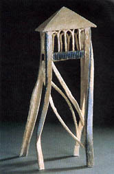

|
More
on Paperclay
by
Graham Hay
I have not wedged clay for four years now because the paper fibre
allows air and moisture to easily escape and because dry scraps
can easily be recycled. Dry scraps are thrown into a bucket of hot
water and within an hour become a joining slip. The slip can also
be used to build up texture or reinforce dry paperclay. Because
of the increased organic material in paperclay, in summer I include
detergent in the water to inhibit bacteria and make only enough
slip for a day at a time.
Other
changes arising from using paperclay include not using a damp cupboard
because I want the individual pieces for a work to be dry before
building. The ability of dry paperclay to absorb water quickly means
that I soak the work where I need to change it or simply replace
the section with plastic paperclay stuck on with paperclay slip.
Stocks of dry paperclay parts left over from other works can be
stored indefinitely until used in new works. If any resulting work
is unsatisfactory it can be pulled apart and quickly rebuilt into
a more desirable form. Surface detail has become increasingly important.
With conventional clay, any intentional texture is often ruined
by handling the soft work. As a result of this, and the functional
vessel tradition, smooth surfaces have become the accepted norm.
Paperclay enables different textures to be built up on the surfaces
of the parts before drying and assembly. These surface textures
are not lost when assembling the dry parts into the final work.
In addition, joining drips can be left, shortening building times
and providing interesting building clues. Whether these methods
are only a personal style or an emerging aesthetic associated with
paperclay, is currently unclear.
Transport of delicate unfired work is no longer a concern because
of the additional strength the fibre brings to the dry clay. This
has been useful when large pieces have been transported across town
for firing. If the work breaks before firing it can be repaired
quickly with paperclay slip, dried with a paint stripper and fired.
Large decorative pieces designed for indoor spaces can even be left
unfired since dry paperclay is a robust material. In this case,
the surface can be painted and waterproofed with varnish, or burnished
and polished with wax to give a warm and smooth surface. If kiln-fired,
the clay reverts to a purely ceramic body on which conventional
glazes appropriate for that clay can be used.
Next
Page > Working with Paperclay >
Page 3
More Articles
|